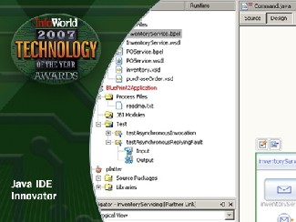

“NetBeans wins over Eclipse this year, because NetBeans has made significant progress and growth relative to Eclipse.” —O’Reilly OnJava.com
“The good news begins with the NetBeans Welcome screen, where the ever-tighter connection of
developers to their tool community is evidenced by the inclusion of blogs as well as community
news.” —eweek
When NetBeans recently nabbed the 2007 InfoWorld Award for Java IDE Innovator, the award was another highlight in a season of good press. But the IDE’s acclaim did not happen overnight; the momentum had been building since the release of NetBeans 4.0 in December 2004. It continued through the releases of NetBeans 4.1 and 5.0, and with the October 2006 release of NetBeans 5.5 there was no denying the IDE's explosive growth and adoption rate.
The NetBeans IDE has gained industry-wide recognition for its portability, ease-of-use, and—with the release of the 5.5 version and its add-on packs—improved productivity. For Jan Chalupa, NetBeans’s Director of Engineering, and his team, the positive feedback has not gone unnoticed.
“It's definitely encouraging and satisfying to see that the hard work we invested into improving NetBeans since the 4.0 release is paying off. We were not only able to fix the performance and usability problems the older versions of NetBeans suffered from, but we also kept up with the latest technologies, and added unique and innovative features.”
The revamp has earned NetBeans an impressive roster of awards and positive reviews from print and online magazines. Likewise, the response from users has been favorable—downloads on the NetBeans site hit the 12-milion mark in December 2006.
According to NetBeans’s Director of Evangelism Judith Lilienfeld, the recent accolades and statistics
are a great validation and recognition of the hard work done by engineers and evangelists, and the
resulting disruption that NetBeans has created in the market. She spoke recently about NetBeans’s
previous challenges, its new favored status, and what lies ahead in 2007.
|
 InfoWorld Innovator Award 2007. |
Yes—quite a nice way to celebrate the new year. If you read through the reviews
and awards, you will notice some things mentioned again and again: ease of use, a
short learning curve, and the increased developer productivity. Also, let's not
forget that the NetBeans IDE runs—without any changes—on all the different
operating systems. This portability is a key value proposition for Java as well as
the NetBeans IDE and Platform.
NetBeans is both an IDE and a Rich Client Platform (RCP). A Rich Client
Platform is just a fancy name for the minimal NetBeans functionality that
is needed to build a rich client application. Anything built on top of the
NetBeans Platform can be called a Rich Client Platform application. There
are people all around the world building RCPs on the NetBeans Platform—one
of those applications is the award-winning NetBeans IDE. It used to be that
building NetBeans RCP applications was a bit cumbersome, but that changed in
February 2006 with the release of NetBeans IDE 5.0 when we added features
that dramatically accelerate the creation of NetBeans RCP applications. The
industry and community took notice, so look for some announcements later this
year about NetBeans RCP applications.
It boils down to three simple reasons. First, several years ago we had some
performance and usability problems. Second, at that same time we had a somewhat
confusing message: there were too many different developer tools based on NetBeans
and it was hard to figure out which to use. Third, while all that was happening IBM
launched the Eclipse phenomenon with major marketing dollars. When I joined the team
a little over two years ago we released NetBeans 4.0 and we could not get any industry
publications to cover the release. But things have obviously changed. So if you haven't
looked at NetBeans in a while, you need to take a new look. Check out some of the stories
of developers who switched
from Eclipse to NetBeans.
|
Judith and the Evangelism Team Keep NetBeans Moving. |